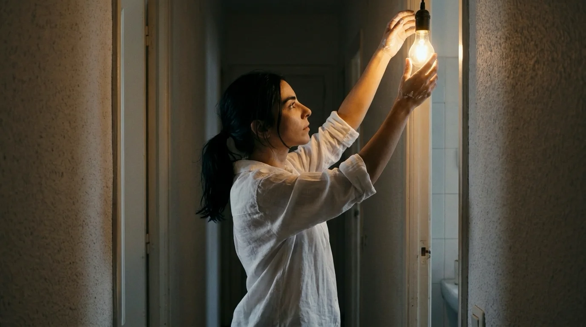
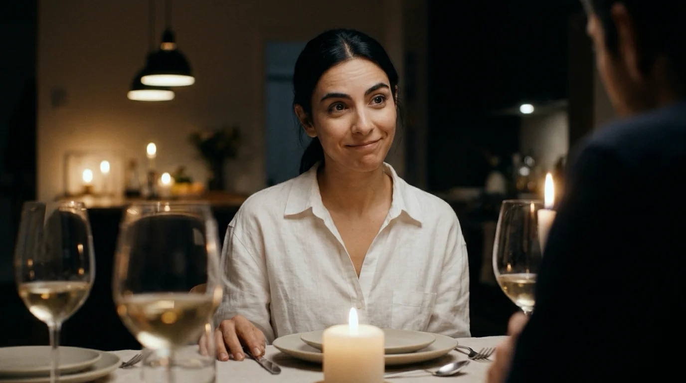
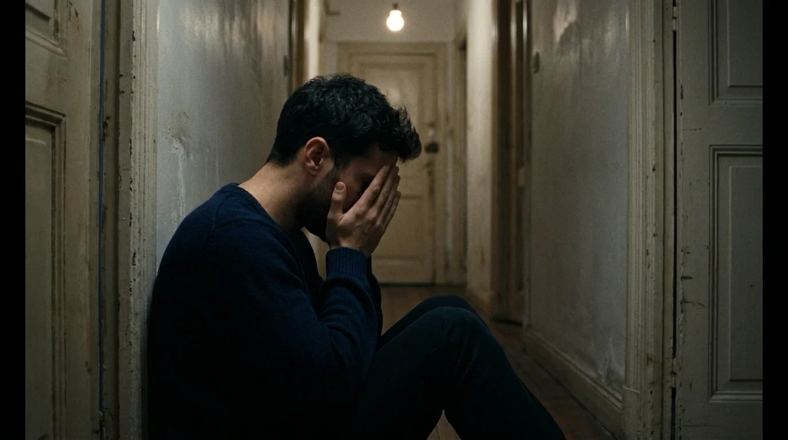
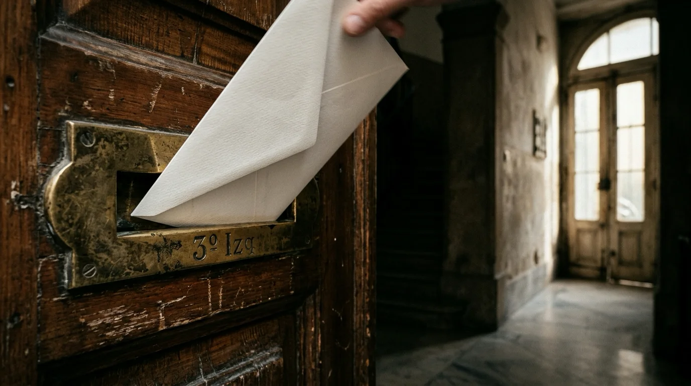
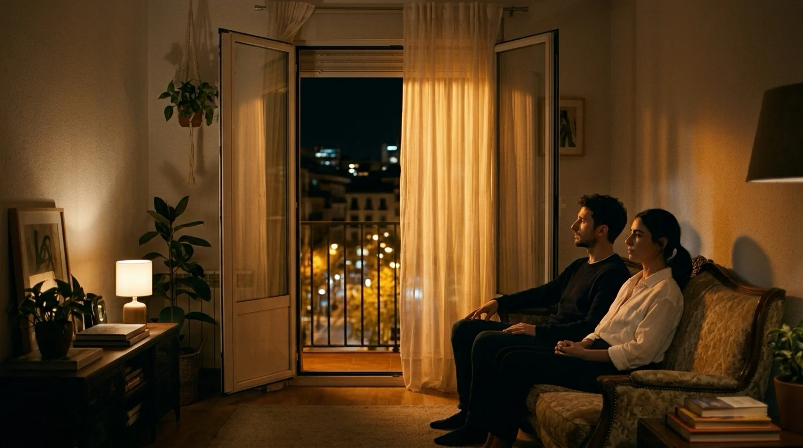

El timbre del tercero izquierda sonó a las nueve menos diez con ese zumbido seco de los telefonillos antiguos de la calle de la Palma. Adrián estaba en la cocina doblando servilletas sobre la mesa de fórmica verde, mientras el aroma a romero y patatas asadas llenaba el corredor.
—Si es Marcos, ábrele tú —gritó Valeria desde el fondo del pasillo, peleando con la bombilla del cuarto de baño que parpadeaba desde el martes—. Todavía tengo los dedos manchados de yeso del taller.
Adrián se secó las palmas en el trapo de cocina. Llevaban tres meses compartiendo aquel piso de techos altos y tarima crujiente, un refugio improvisado tras dejar las casas de sus padres donde las cajas de cartón aún servían de mesas auxiliares. Se conocían desde cuarto de la ESO, cuando compartían apuntes de física en un banco del Retiro, y presumían de una complicidad limpia. Al menos hasta esa semana, cuando ambos reconocieron que sus romances ya no cabían en susurros a deshoras.
Al descolgar, la voz que sonó fue la de Lucía, amortiguada por el viento del portal:
—Soy yo. No sé si he traído vino suficiente.
—Sube, anda. Tercer piso, a la derecha.
Adrián dejó la puerta entornada y encendió las velas de té alineadas en el alféizar. Estaba nervioso. Llevaba cuatro meses viéndose con Lucía en cafeterías discretas y hoteles cercanos a Nuevos Ministerios. Ella trabajaba en el departamento de cuentas de su misma agencia y siempre repetía la misma promesa con la vista fija en su café: su novio no era mala persona, simplemente la rutina los había ahogado, pero necesitaba hallar el momento exacto para mudarse sin destrozarlo. Adrián la había creído.
La cancela de hierro del ascensor chirrió en el rellano. Lucía entró envuelta en un abrigo marengo, con la nariz enrojecida por el otoño y una bolsa de papel kraft con dos botellas de Rioja.
—Huele a casa de verdad —dijo ella, soltando el bolso y rodeándole el cuello con los brazos fríos—. Me ha costado aparcar un triunfo.
Se besaron con la torpeza apresurada de quienes no están acostumbrados a quererse con las luces del techo encendidas.
—Valeria está terminando de arreglarse —susurró Adrián, retirándole un mechón claro de la frente—. Te va a encantar. No tiene doblez.
Dos golpes sonaron entonces en la madera entornada de la entrada.
—¡Adelante, que está abierto! —avisó Valeria, saliendo por fin con una camisa blanca remangada—. Marcos, prepárate, que Adrián ha traído un queso que parece…

La frase murió en su garganta.
En el umbral, recortado contra la bombilla de la escalera, estaba un hombre de chaqueta de cuero y bufanda de espiga con una caja de pasteles bajo el brazo.
El silencio que cayó sobre el recibidor fue instantáneo y glacial, como si el aire del rellano hubiera congelado los pulmones de los cuatro a la vez. Marcos no dio un paso adelante. Se quedó inmóvil, con la mano suspendida en el aire, clavando los ojos en la mujer del abrigo que sujetaba dos copas de cristal.
Lucía retrocedió con tal brusquedad que el borde de una copa chocó contra el aparador. No se quebró de milagro. Sus pupilas, habitualmente serenas, pasaron de Marcos a Valeria y de Valeria a Adrián en un cálculo vertiginoso que desmoronaba cualquier defensa.
—¿Qué haces tú aquí? —preguntó Lucía. Su voz salió en un hilo áspero.
Valeria parpadeó, desconcertada, buscando en su amigo un gesto cómplice que explicara el absurdo:
—¿Os conocéis de la agencia? Marcos es el arquitecto del estudio que os conté, el que…
—¿Qué haces tú aquí, Marcos? —repitió Lucía, elevando el tono e ignorando a Valeria.
Marcos tragó saliva. La caja de pasteles tembló bajo su brazo.
—Lucía, espera… déjame hablar —murmuró, rehuyendo la mirada de Adrián—. Me dijiste que cenabas con unas compañeras de máster en Chamberí.
—¿Chamberí? —saltó Adrián, dando un paso al frente mientras el estómago se le cerraba en un nudo ardiente—. Lucía trabaja conmigo en Gran Vía. Y ha venido a cenar conmigo. Es mi pareja.
—¿Tu pareja? —la risa de Marcos fue breve y amarga, un espasmo de incredulidad defensiva—. No puede ser tu pareja, chaval. Esta mujer vive conmigo en la calle Sagasta desde hace tres años.

Las palabras cayeron sobre la tarima como plomo fundido. Valeria se llevó una mano al pecho; el color abandonó sus mejillas con tal violencia que tuvo que apoyarse en el marco de la cocina.
—No —susurró Valeria, mirando a Marcos con una súplica rota—. Me dijiste que compartías piso con un socio mientras liquidabais un alquiler. Que el mes que viene te mudabas a Malasaña.
Lucía dejó las copas sobre la cómoda con un golpe seco. Miró a Marcos con un desprecio tan puro que parecía haber olvidado que ella misma estaba abrazando a otro hombre segundos antes.
—¿Liquidando el alquiler? —inquirió Lucía, cruzándose de brazos con la mandíbula rígida—. ¿Por eso evitabas firmar la renovación de la hipoteca la semana pasada? ¿Por esta cría?
—¡No la llames así! —gritó Adrián, interponiéndose entre Lucía y Valeria por instinto protector—. ¡La que lleva cuatro meses engañándome eres tú! ¡Diciéndome que tu ex no aceptaba la ruptura y que dormías en el sofá!
—¡Porque tú me mentías cada noche! —estalló Marcos, señalando a Lucía con un dedo tembloroso—. ¡Me hacías sentir culpable por estar distante mientras te acostabas con este chaval!
—¡Y tú te acostabas con mi compañera de piso! —bramó Adrián—. ¡Los dos sois unos farsantes!
El salón se convirtió en una sala de autopsias. Durante diez minutos implacables se cruzaron fechas, excusas calcadas, viajes de trabajo ficticios y escapadas que coincidían con precisión cruel en el calendario. Marcos le había prometido a Valeria las mismas palabras que Lucía le susurraba a Adrián en el coche: que la culpa era del tiempo y que solo faltaban semanas para ser libres.
Valeria no gritó. Clavó la mirada en la caja de dulces sobre el mueble: era de la pastelería de la plaza de Olavide donde él la citaba los jueves.
—Fuera —dijo Valeria en voz baja. Nadie la oyó entre los reproches—. ¡He dicho que os larguéis! —gritó entonces, con una fuerza que retumbó en la escalera—. ¡Fuera los dos de mi casa ahora mismo!
Lucía recogió su bolso, esquivó a Adrián sin mirarlo y bajó las escaleras a zancadas sonoras. Marcos intentó rozar el brazo de Valeria al salir:
—Valeria, déjame explicarte…
—Si me tocas, llamo a la policía —respondió ella entre dientes, con los ojos arrasados de rabia.

La puerta se cerró con un golpe que estremeció el cristal del pasillo.
En la cocina, el horno pitó anunciando que las patatas estaban listas. Ninguno fue a apagarlo. Adrián se dejó caer en el suelo, con la espalda pegada al tabique y las manos en la cara. Valeria permaneció junto al alféizar, contemplando cómo las velas de té se consumían contra el vidrio oscuro.
—¿Tú sabías algo? —preguntó él al cabo de un largo rato, con la voz rota.
Valeria no se giró.
—¿Cómo iba a saberlo? Me enseñó bocetos para reformar nuestro futuro piso. Me presentó a sus amigos como si fuera lo mejor de su vida.
—A mí me decía que se sentía sola. Que yo era el único que la comprendía.
Valeria soltó una risa seca, sin rastro de humor:
—Éramos el consuelo fácil de dos cobardes incapaces de romper. Y nosotros, encantados de sentirnos especiales.
Durante las semanas siguientes, el piso de la calle de la Palma perdió su calidez. La vergüenza pesaba más que cualquier enfado: se evitaban en los desayunos, dejaban notas escuetas para pagar las facturas y salían temprano para regresar cuando el otro ya dormía. No se culpaban, pero mirarse a la cara suponía recordar la vanidad con la que habían creído burlar al mundo.
En el apartamento de Sagasta, la demolición de la vida común fue dolorosa. Marcos y Lucía tuvieron que repartir cuentas bancarias, devolver compras y clasificar cajas acumuladas durante años. Los primeros días fueron tormentosos, cargados del resentimiento de dos personas que se creían víctimas absolutas del otro.
Sin embargo, a la tercera tarde, sentados en un salón desmantelado entre precinto y periódicos viejos, el rencor se agotó.
—¿Cuándo empezó lo vuestro? —preguntó Marcos de pronto, tendiéndole un café en vaso de cristal.

Lucía sopló sobre la taza, mirando el polvo suspendido en la ventana:
—En junio. Después de tu viaje a Lisboa. Llevábamos meses durmiendo de espaldas, Marcos. Te levantabas a las seis para no coincidir conmigo.
Él no lo negó. Apoyó la nuca en la pared desnuda:
—Tenías razón. Estaba aterrado. Sentía que casarme contigo era asumir que la vida se había terminado, que todo era una rutina sellada hasta la vejez. Cuando conocí a Valeria… no fue ella. Fue la ilusión de no tener pasado, de empezar de cero sin pedir perdón.
—Adrián me miraba como si yo no tuviera defectos —confesó Lucía con una mueca triste—. Y yo estaba tan cansada de sentirme insuficiente que me dejé llevar. Fui una cobarde.
Por primera vez hablaron sin escudos. El desastre ya había ocurrido y no quedaba nada que proteger. En esa crudeza descubrieron algo insólito: se conocían mejor que nadie. Entendían sus silencios culpables y sus debilidades. No regresaron juntos esa tarde, pero al entregar las llaves al casero cenaron juntos en una taberna cercana, sin promesas ni reproches, lejos de las mentiras que habían tejido.
Catorce meses después de aquella cena rota, el cartero dejó un sobre blanco en el buzón del tercero izquierda. Valeria recogió la correspondencia y entró en el salón, donde Adrián leía junto al balcón abierto al sol de primavera.
—Es para los dos —dijo ella, dejando una cartulina de papel verjurado sobre sus piernas.
Adrián leyó la caligrafía limpia en tinta azul oscuro:
*«Marcos y Lucía tienen el placer de invitaros a su enlace…»*
La ceremonia se celebraría en una finca rústica frente a los acantilados de Jávea. Al dorso, una nota de Lucía añadía unas líneas: *«Sabemos que puede parecer un despropósito. Pero si hoy podemos querernos de verdad, sin trampas, es porque aquella noche rompisteis nuestras mentiras. No esperamos que vengáis, pero necesitábamos que supierais que no guardamos rencor.»*
Adrián soltó la tarjeta sobre la mesa:

—Qué cinismo. Levantaron su historia sobre las ruinas de las nuestras y ahora buscan nuestra bendición para sentirse limpios.
—No es cinismo —respondió Valeria despacio, mirando las acacias del patio—. Es honestidad. Nos dicen que fuimos el error que necesitaban cometer para encontrarse.
—¿Tú vas a ir?
Valeria tardó en contestar:
—Sí. Necesito verlo.
Adrián se quedó en Madrid el sábado de la boda, refugiado en una sala de cine. Valeria tomó un autobús al alba y se sentó en la última fila del jardín de Jávea, detrás de familiares e invitados que no la conocían. El mar rompía contra las rocas con un rumor constante. Cuando Lucía apareció del brazo de su padre, Valeria sintió una punzada breve en el estómago, un rescoldo de aquel orgullo herido. Pero al mirar a Marcos en el altar vio una quietud serena que jamás percibió en sus citas furtivas.
Al pronunciar los votos no hubo dramatismo; se tomaron de las manos como dos náufragos que conocen el precio exacto del barco que hundieron para salvarse. Y al besarse, Valeria comprendió una verdad liberadora: Marcos nunca había sido para ella, ni Lucía para Adrián. Solo habían sido el detonante necesario para que dos personas dejaran de engañarse.
Esa noche, de regreso a Madrid, Valeria abrió la puerta del piso pasadas las dos. Encontró a Adrián sentado a oscuras en el salón, con un vaso de agua en la mano y la luz lejana de las farolas dibujando sombras en el techo.
—¿Qué tal ha ido? —preguntó él en un susurro.
Valeria se quitó los zapatos y se sentó en el suelo, apoyando la espalda en su sillón, en el mismo rincón donde lloraron juntos meses atrás:
—Estaban guapos —dijo ella, cerrando los ojos—. Y se quieren de verdad.
Adrián bebió un sorbo:
—A veces me pregunto si volveremos a ser los de antes. Los del instituto. Los que no tenían nada que callarse.
Valeria contempló el salón en penumbra y la distancia prudente que se había instalado entre sus cuartos:
—No —respondió con una calma franca—. Lo de antes ya no existe, Adrián. Pero podemos intentar ser los de ahora. Los que aprendieron a mirar la verdad sin salir huyendo.
Adrián asintió despacio y le apretó el hombro con un gesto cansado y sincero. Fuera, Madrid dormía bajo el eco de la noche, mientras los dos amigos permanecieron juntos en silencio, aceptando por fin que madurar no consiste en evitar las heridas, sino en no fingir que nunca sangraron.